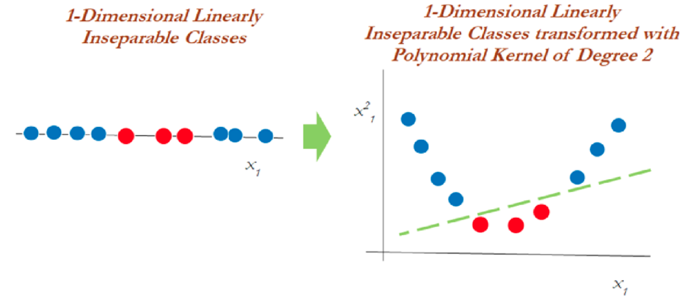
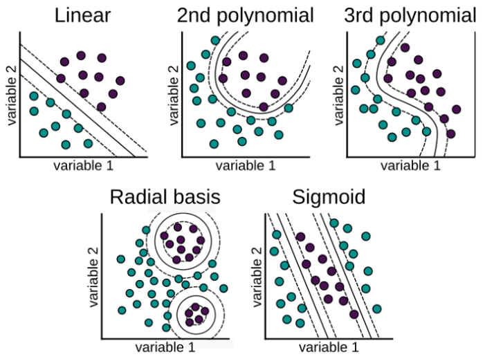
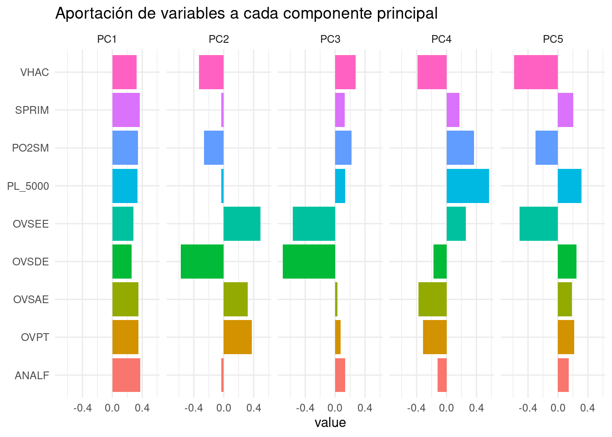

Capítulo 4 Support Vector Machine (SVM)
Support vector machine, llamadas SVM, son un algoritmo de aprendizaje supervisado que se puede utilizar para problemas de clasificación y regresión. Se utiliza para conjuntos de datos más pequeños, ya que tarda demasiado en procesarse.

El principal objetivo de esta técnica es encontrar el Hiperplano de Separación Óptima, también conocido como Boundary Decision, el cual separa a las clases involucradas.
Para entender este algoritmo es necesario entender 3 conceptos principales:
- Maximum margin classifiers
- Support vector classifiers
- Support vector machines
Estudiemos cada uno de estos principios.
4.1 Maximum Margin Classifier
A menudo se generalizan con máquinas de vectores de soporte, pero SVM tiene muchos más parámetros en comparación. El clasificador de margen máximo considera un hiperplano con ancho de separación máxima para clasificar los datos. Sin embargo, se pueden dibujar infinitos hiperplanos en un conjunto de datos por lo que es importante elegir el hiperplano ideal para la clasificación.
En un espacio n-dimensional, un hiperplano es un subespacio de la dimensión n-1. Es decir, si los datos tienen un espacio bidimensional, entonces el hiperplano puede ser una línea recta que divide el espacio de datos en dos mitades y pasa por la siguiente ecuacion:
\[\beta_0 + \beta_1X_1 + \beta_2X_2=0\]
Las observaciones que caen en el hiperplano sigue la ecuación anterior. Las observaciones que caen en la región por encima o por debajo del hiperplano sigue las siguientes ecuaciones:
\[\beta_0 + \beta_1X_1 + \beta_2X_2>0\]
\[\beta_0 + \beta_1X_1 + \beta_2X_2<0\]
El clasificador de margen máximo a menudo falla en la situación de casos no separables en los que no puede asignar un hiperplano diferente para clasificar datos no separables. Para tales casos, un clasificador de vectores de soporte viene al rescate.

Del diagrama anterior, podemos suponer infinitos hiperplanos (izquierda). El clasificador de margen máximo viene con un solo hiperplano que divide los datos como en la gráfica de la derecha. Los datos que tocan los hiperplanos positivo y negativo se denominan vectores de soporte.
4.2 Support Vector Classifiers
Los vectores de soporte son las observaciones que están más cerca del hiperplano e influyen en la posición y orientación del hiperplano. Este tipo de clasificador puede considerarse como una versión extendida del clasificador de margen máximo. Cuando tratamos con datos de la vida real, encontramos que la mayoría de las observaciones están en clases superpuestas. Es por eso que se implementan clasificadores de vectores de soporte.
Usando estos vectores de soporte, maximizamos el margen del clasificador. Eliminar los vectores de soporte cambiará la posición del hiperplano. Estos son los puntos que nos ayudan a construir nuestro SVM. Consideremos un parámetro de ajuste C. En este clasificador, el alto valor de C puede darnos un modelo robusto. Un valor más bajo de C nos da un modelo flexible. Entendamos con el siguiente diagrama.

Podemos ver en el gráfico de la izquierda que los valores más altos de C generaron más errores que se consideran una violación o infracción. El diagrama de la derecha muestra un valor más bajo de C y no brinda suficientes posibilidades de infracción al reducir el ancho del margen.
4.3 Support Vector Machine
El enfoque de la máquina de vectores de soporte se considera durante una decisión no lineal y los datos no son separables por un clasificador de vectores de soporte, independientemente de la función de costo.
Cuando es casi imposible separar clases de manera no lineal, aplicamos el truco llamado truco del kernel el cual ayuda a manejar la separación de los datos.

En el gráfico anterior, los datos que eran inseparables en una dimensión se separaron una vez que se transformaron a un espacio de dos dimensiones después de aplicar una transformación mediante kernel polinomial de segundo grado. Ahora veamos cómo manejar los datos bidimensionales linealmente inseparables.

En datos bidimensionales, el núcleo polinomial de segundo grado se aplica utilizando un plano lineal después de transformarlo a dimensiones superiores.
4.4 El truco del Kernel
Las funciones Kernel son métodos con los que se utilizan clasificadores lineales como SVM para clasificar puntos de datos separables no linealmente. Esto se hace representando los puntos de datos en un espacio de mayor dimensión que su original. Por ejemplo, los datos 1D se pueden representar como datos 2D en el espacio, los datos 2D se pueden representar como datos 3D, etcétera.
El truco del kernel ofrece una forma de calcular las relaciones entre los puntos de datos utilizando funciones del kernel y representar los datos de una manera más eficiente con menos cómputo. Los modelos que utilizan esta técnica se denominan “modelos kernelizados”.

Hay varias funciones que utiliza SVM para realizar esta tarea. Algunos de los más comunes son:
- El núcleo lineal: Se utiliza para datos lineales. Esto simplemente representa los puntos de datos usando una relación lineal.
\[K(x, y)=(x^T \cdot y)\] \[f(x)=w^T \cdot x + b\] Esta formulación se presenta como solución al problema de optimización sobre w:
\[min_{w\in R^d} \parallel w \parallel ^2+ C\sum_{i}^{N}{max(0, 1-y_if(x_i))}\] \[s.a. \quad y_i(w^T x_i+b) \geq 1 - max(0, 1-y_if(x_i))\]
- Función de núcleo polinomial: Transforma los puntos de datos mediante el uso del producto escalar y la transformación de los datos en una “dimensión n,” n podría ser cualquier valor de 2, 3, etcétera, es decir, la transformación será un producto al cuadrado o superior. Por lo tanto, representar datos en un espacio de mayor dimensión utilizando los nuevos puntos transformados.
\[K(x, y)=(c+ x^T \cdot y)^p\]
Cuando se emplea \(p=1\) y \(c=0\), el resultado es el mismo que el de un kernel lineal. Si \(p>1\), se generan límites de decisión no lineales, aumentando la no linealidad a medida que aumenta p. No suele ser recomendable emplear valores de p mayores 5 por problemas de overfitting.

- La función de base radial (RBF): Esta función se comporta como un “modelo de vecino más cercano ponderado.” Transforma los datos representándolos en dimensiones infinitas,
La función Radial puede ser de Gauss o de Laplace. Esto depende de un hiperparámetro conocido como gamma \(\gamma\). Cuanto menor sea el valor del hiperparámetro, menor será el sesgo y mayor la varianza. Mientras que un valor más alto de hiperparámetro da un sesgo más alto y menor varianza. Este es el núcleo más utilizado.
\[K(x, y)=exp(-\gamma \parallel x - y\parallel^2)=exp(-\frac{\parallel x-y \parallel ^2}{2\sigma²})\] \[f(x)=w^T \cdot \phi(x) + b\] Se realiza un mapeo de x a \(\phi(x)\) en donde los datos son separables

Es recomendable probar el kernel RBF. Este kernel tiene dos ventajas: que solo tiene dos hiperparámetros que optimizar (\(\gamma\) y la penalización \(C\) común a todos los SVM) y que su flexibilidad puede ir desde un clasificador lineal a uno muy complejo.
- La función sigmoide: También conocida como función tangente hiperbólica (Tanh), encuentra más aplicación en redes neuronales como función de activación. Esta función se utiliza en la clasificación de imágenes.
\[K(x, y)= tanh(\kappa x\cdot y-\delta)\]
¿Por qué se llama un “truco del kernel?” SVM vuelve a representar hábilmente los puntos de datos no lineales utilizando cualquiera de las funciones del kernel de una manera que parece que los datos se han transformado, luego encuentra el hiperplano de separación óptimo. Sin embargo, en realidad, los puntos de datos siguen siendo los mismos, en realidad no se han transformado. Es por eso que se llama un ‘truco del kernel.’
4.5 Ventajas y desventajas
Ventajas
Es un modelo que ajusta bien con pocos datos
Son flexibles en datos no estructurados, estructurados y semiestructurados.
La función Kernel alivia las complejidades en casi cualquier tipo de datos.
Se observa menos sobreajuste en comparación con otros modelos.
Desventajas
El tiempo de entrenamiento es mayor cuando se calculan grandes conjuntos de datos.
Los hiperparámetros suelen ser un desafío al interpretar su impacto.
La interpretación general es difícil (black box).
4.6 Ajuste del modelo con R
Usaremos las recetas antes implementadas para ajustar tanto el modelo de regresión como el de clasificación. Exploraremos un conjunto de hiperparámetros para elegir el mejor modelo.
Recordemos que es importante separar los datos de entrenamiento y prueba, así como sub-particionar en fold a los datos de entrenamiento para realizar diferentes pruebas con distintas parametrizaciones de los modelos. Finalmente, calcularemos el error promedio y los mejores hiperparámetros a implementar.
library(tidymodels)
data(ames)
set.seed(4595)
ames_split <- initial_split(ames, prop = 0.75)
ames_train <- training(ames_split)
ames_test <- testing(ames_split)
ames_folds<- vfold_cv(ames_train)Contando con datos de entrenamiento, procedemos a realizar el feature engineering para extraer las mejores características que permitirán realizar las estimaciones en el modelo.
receta_casas <- recipe(Sale_Price ~ . , data = ames_train) %>%
step_unknown(Alley) %>%
step_rename(Year_Remod = Year_Remod_Add) %>%
step_rename(ThirdSsn_Porch = Three_season_porch) %>%
step_ratio(Bedroom_AbvGr, denom = denom_vars(Gr_Liv_Area)) %>%
step_mutate(
Age_House = Year_Sold - Year_Remod,
TotalSF = Gr_Liv_Area + Total_Bsmt_SF,
AvgRoomSF = Gr_Liv_Area / TotRms_AbvGrd,
Pool = if_else(Pool_Area > 0, 1, 0),
Exter_Cond = forcats::fct_collapse(Exter_Cond, Good = c("Typical", "Good", "Excellent"))) %>%
step_relevel(Exter_Cond, ref_level = "Good") %>%
step_normalize(all_predictors(), -all_nominal()) %>%
step_dummy(all_nominal()) %>%
step_interact(~ Second_Flr_SF:First_Flr_SF) %>%
step_interact(~ matches("Bsmt_Cond"):TotRms_AbvGrd) %>%
step_rm(
First_Flr_SF, Second_Flr_SF, Year_Remod,
Bsmt_Full_Bath, Bsmt_Half_Bath,
Kitchen_AbvGr, BsmtFin_Type_1_Unf,
Total_Bsmt_SF, Kitchen_AbvGr, Pool_Area,
Gr_Liv_Area, Sale_Type_Oth, Sale_Type_VWD
) %>%
prep()Recordemos que la función recipe() solo son los pasos a seguir, necesitamos usar la función prep() que nos devuelve una receta actualizada con las estimaciones y la función juice() que nos devuelve la matriz de diseño.
Una vez que la receta de transformación de datos está lista, procedemos a implementar el pipeline del modelo de interés.
svm_model <- svm_rbf(
mode = "regression",
cost = tune(),
rbf_sigma = tune(),
margin = tune()) %>%
set_engine("kernlab")
svm_workflow <- workflow() %>%
add_recipe(receta_casas) %>%
add_model(svm_model)
svm_parameters_set <- parameters(svm_workflow) %>%
update(
rbf_sigma = rbf_sigma(c(-2.5, 2.5)),
cost = cost(c(0, 15))
)
set.seed(123)
svm_grid <- svm_parameters_set %>%
grid_max_entropy(size = 80)
ctrl_grid <- control_grid(save_pred = T, verbose = T)library(doParallel)
UseCores <- detectCores() - 1
cluster <- makeCluster(UseCores)
registerDoParallel(cluster)
svm1 <- Sys.time()
svm_tune_result <- tune_grid(
svm_workflow,
resamples = ames_folds,
grid = svm_grid,
metrics = metric_set(rmse, mae, mape),
control = ctrl_grid
)
svm2 <- Sys.time(); svm2 - svm1
stopCluster(cluster)
svm_tune_result %>% saveRDS("models/svm_model_reg.rds")Podemos obtener las métricas de cada fold con el siguiente código:
svm_tune_result <- readRDS("models/svm_model_reg.rds")
svm_tune_result %>% unnest(.metrics)## # A tibble: 2,400 × 11
## splits id cost rbf_sigma margin .metric .estimator .estimate
## <list> <chr> <dbl> <dbl> <dbl> <chr> <chr> <dbl>
## 1 <split [1977/220]> Fold… 357. 0.0839 0.110 rmse standard 43741.
## 2 <split [1977/220]> Fold… 357. 0.0839 0.110 mae standard 28240.
## 3 <split [1977/220]> Fold… 357. 0.0839 0.110 mape standard 18.6
## 4 <split [1977/220]> Fold… 10956. 5.22 0.180 rmse standard 90721.
## 5 <split [1977/220]> Fold… 10956. 5.22 0.180 mae standard 66139.
## 6 <split [1977/220]> Fold… 10956. 5.22 0.180 mape standard 42.4
## 7 <split [1977/220]> Fold… 5733. 96.0 0.0128 rmse standard 91135.
## 8 <split [1977/220]> Fold… 5733. 96.0 0.0128 mae standard 65465.
## 9 <split [1977/220]> Fold… 5733. 96.0 0.0128 mape standard 41.4
## 10 <split [1977/220]> Fold… 26216. 7.45 0.197 rmse standard 90721.
## # … with 2,390 more rows, and 3 more variables: .config <chr>, .notes <list>,
## # .predictions <list>En la siguiente gráfica observamos el error cuadrático medio de las distintas métricas:
svm_tune_result %>% autoplot()